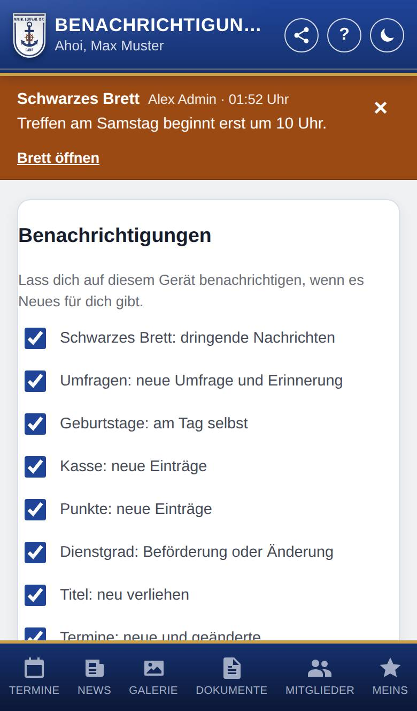
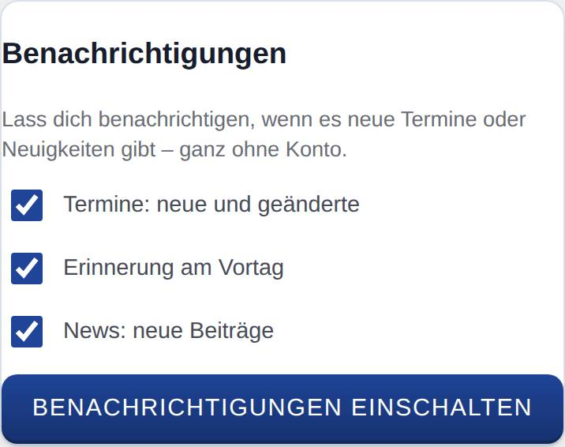
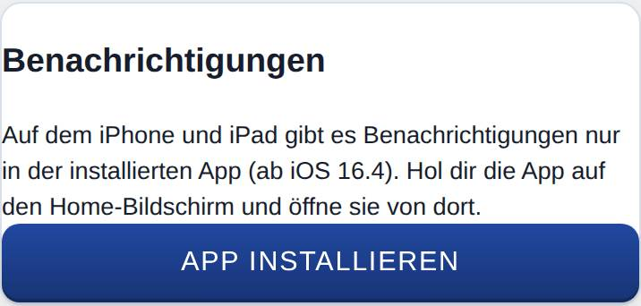

Benachrichtigungen
Die App kann dich auf dem Handy oder am Computer benachrichtigen, wenn es etwas Neues gibt – auch wenn sie gerade geschlossen ist. Auf dieser Seite schaltest du das ein und wählst, worüber du benachrichtigt wirst.

So öffnest du die Seite
- Mit Konto: Tippe unten auf Meins, wähle oben im Menü Konto und tippe auf Benachrichtigungen einstellen.
- Ohne Konto: Tippe unter Termine auf Bei neuen Terminen benachrichtigen oder unter News auf Bei neuen Beiträgen benachrichtigen.
Was du hier siehst
- Arten: eine Zeile mit Haken je Art von Nachricht, z. B. Termine: neue und geänderte. Du siehst nur die Arten, die es für dich gibt (siehe unten).
- Strafen: Betrag und Grund in der Nachricht zeigen (nur mit Konto, wenn es Strafen gibt): Ist der Haken weg, steht in der Nachricht nur ein Hinweis – gut, wenn andere deinen Sperrbildschirm sehen.
- Benachrichtigungen einschalten: schaltet die Benachrichtigungen auf diesem Gerät ein.
- Testnachricht senden und Benachrichtigungen ausschalten: erscheinen, sobald die Benachrichtigungen an sind.
So gehst du vor
Benachrichtigungen einschalten
- Öffne die Seite wie oben beschrieben.
- Alle Arten sind angehakt. Nimm die Haken weg, die du nicht möchtest.
- Tippe auf Benachrichtigungen einschalten.
- Dein Browser fragt, ob die Seite Benachrichtigungen senden darf. Tippe auf Erlauben.
- Es erscheint „Benachrichtigungen sind an“. Mit Testnachricht senden prüfst du, ob alles ankommt.

Arten ändern
- Öffne die Seite.
- Setze oder entferne die Haken. Die Änderung gilt sofort, ohne weiteren Knopf.
Mindestens eine Art bleibt angehakt. Ganz aus geht es mit Benachrichtigungen ausschalten.
Benachrichtigungen ausschalten
- Öffne die Seite.
- Tippe auf Benachrichtigungen ausschalten. Es erscheint „Benachrichtigungen sind aus“.
Welche Arten es gibt
Welche Arten du siehst, hängt davon ab, welche Bereiche die Marinekompanie Lank nutzt und ob du angemeldet bist.
Für alle, auch ohne Konto:
- Termine: neue und geänderte: wenn ein Termin dazukommt oder sich Beginn, Ende oder Ort ändern. Kommen viele neue Termine auf einmal, gibt es eine Sammelnachricht.
- Erinnerung am Vortag: eine Nachricht mit allen Terminen von morgen, ab der Uhrzeit, die ein Admin festlegt (üblich 18 Uhr).
- News: neue Beiträge: wenn ein neuer Beitrag erscheint.
Diese Nachrichten bekommst du zu den Terminen, die du unter Termine siehst: ohne Konto zu den öffentlichen Terminen, als Mitglied oder mit dem internen Kalender (z. B. Anwärter) zum Kalender der Marinekompanie Lank, wenn sie ihn nutzt.
Für Mitglied und Personen mit dem internen Kalender (z. B. Anwärter):
- Schwarzes Brett: dringende Nachrichten: sobald jemand eine Nachricht ans Schwarzes Brett schreibt (außer er schaltet die Benachrichtigung dabei ab).
Nur für Mitglied:
- Umfragen: neue Umfrage und Erinnerung: bei jeder neuen Umfrage und 24 Stunden vor ihrem Ende, wenn du noch nicht geantwortet hast.
- Geburtstage: am Tag selbst: am Geburtstag eines anderen Mitglieds, das seinen Geburtstag anderen zeigt, ab der Uhrzeit, die ein Admin festlegt (üblich 7 Uhr).
- Strafen: neue Einträge: bei einem neuen Eintrag für dich.
- Punkte: neue Einträge: wenn du Punkte bekommst oder sie dir abgezogen werden, mit Wert und Grund.
- Dienstgrad: Beförderung oder Änderung: wenn sich dein Dienstgrad ändert.
- Titel: neu verliehen: wenn dir ein Titel verliehen wird.
Bei Punkte, Strafen, Dienstgrad und Titel geht es immer nur um deine eigenen Einträge.
Auf dem iPhone und iPad
Dort gibt es Benachrichtigungen nur in der installierten App (ab iOS 16.4), nicht in Safari. Öffnest du die Seite im Browser, siehst du nur einen Hinweis und den Knopf App installieren. Hol dir die App zuerst auf den Home-Bildschirm, siehe Die App aufs Handy holen, öffne sie von dort und schalte die Benachrichtigungen dann ein.

Gut zu wissen
- Die Einstellung gilt nur für das Gerät, auf dem du sie vornimmst. Auf weiteren Geräten schaltest du sie dort ein.
- Mit einem Konto bekommen höchstens 10 Geräte Benachrichtigungen. Schaltest du sie auf einem weiteren ein, fällt das am längsten eingerichtete weg.
- Meldest du dich in der App ab, schaltet sie die Benachrichtigungen deines Kontos auf diesem Gerät aus. Endet die Anmeldung anders (z. B. abgelaufen), passiert das, sobald die App auf dem Gerät wieder geöffnet wird.
- Schaltet die Marinekompanie Lank Schwarzes Brett, Umfragen oder Geburtstage zum ersten Mal ein, kommt die neue Art auf Geräten, die schon Benachrichtigungen bekommen, einmalig von selbst dazu.
- Ohne Konto eingeschaltete Benachrichtigungen enden von selbst, wenn die App auf dem Gerät ein halbes Jahr lang nicht geöffnet wurde und keine Nachricht kam.
Wenn nichts ankommt
- Steht dort „Benachrichtigungen sind für diese Seite blockiert“, hast du die Nachfrage des Browsers abgelehnt. Erlaube Benachrichtigungen in den Einstellungen des Browsers (bzw. des Handys unter Mitteilungen) und lade die App neu.
- Stromsparmodus und „Nicht stören“ halten Nachrichten manchmal zurück.
- Steht dort „Der Server dieser App kann noch keine Benachrichtigungen senden“, sag bitte einem Admin Bescheid.
- Steht dort „Dieser Browser unterstützt keine Benachrichtigungen“, probier es mit einem aktuellen Chrome, Firefox, Edge oder Safari.